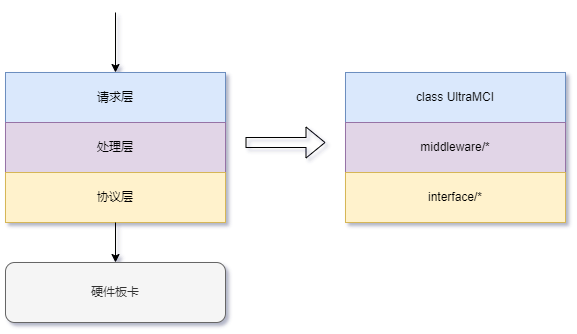
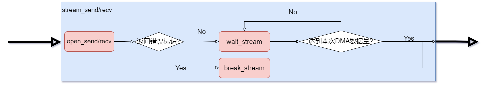

目录
基本结构

- 本SDK提供的接口主要针对射频/数字组件与cpu的交互，将整个交互流程划分为
请求层、处理层、协议层三个部分
- 请求层:
- 将组件提供的各种参数的读取和配置，看作对一个寄存器的读写，那么参数名即为
寄存器地址，参数值为寄存器值
- 将与组件的数据流交互看作一次次DMA，可以指定使用的dma通道、内存地址、数据大小等进行一次dma
- 处理层: 组件与cpu之间可能会约定各种各样的上层交互协议，那么可以在中间处理这一部分中实现上层协议，并将此协议的最终控制接口转为请求所需的读写寄存器和DMA格式
- 协议层: 对诸如TCP、串口、axi_lite、axi_stream等标准通信协议，进行封装。
- 基于这三个部分的划分，
协议层、处理层的变更不会影响基于请求层开发的任何程序
自闭环仿真
- 待办事项:
- SimCmdUItf、SimStreamUItf类暂未实现
- 提供SimCmdUItf、SimStreamUItf两个虚拟协议类，可以模拟与板卡的通信过程，支持写入记忆、数据流仿真等一系列功能，方便 在没有硬件条件时测试上层程序
from nsukit import NSUKit
from nsukit.interface import SimCmdUItf, SimStreamUItf
kit = NSUKit(SimCmdUItf, SimStreamUItf)
kit.link_cmd()
kit.link_stream()
kit.write(0x10, b'\x01\x02\x03\x04')
...
数据流交互
同步方式

- 同步方式数据流交互接口: NSUKit.stream_send、NSUKit.stream_recv
- 如下示例在host上申请了一片1G的内存，对前1kB写入数据20，将这1kB数据下发到板卡
from nsukit import NSUKit
...
kit: NSUKit
fd = kit.alloc_buffer(length=1024**3)
buf = kit.get_buffer(fd, 1024**3)
buf[:1024] = 20
kit.stream_send(chnl=0, fd=fd, length=1024, offset=0)
异步方式

- 提供异步数据流交互接口: NSUKit.open_send、NSUKit.open_recv、NSUKit.wait_stream、NSUKit.break_stream
- 接口在开启数据流后立即返回，不等待说有数据传输完成，用户可以在数据流传输过程中继续执行其它操作
from nsukit import NSUKit
...
kit: NSUKit
fd = kit.alloc_buffer(length=1024**3)
res = kit.open_send(chnl=0, fd=fd, length=1024**3, offset=0)
kit.execute('状态查询')
print(kit.get_param('板卡温度'))
if res != -1:
while res != 1024**3:
res = kit.wait_stream(fd, timeout=0.05)
Copyright © 2023 耐数 naishu.tech 北京耐数电子有限公司